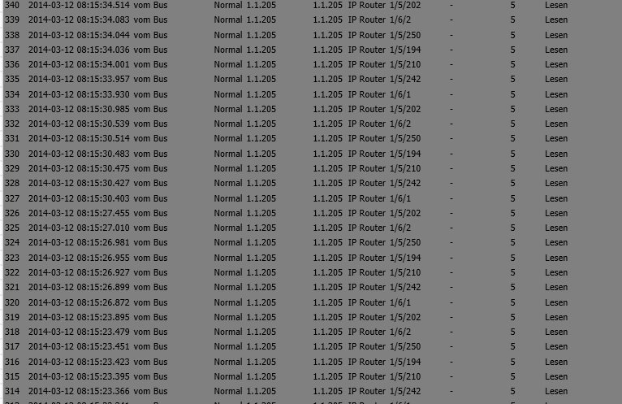

Good Morning,
I have a little problem with the comunication between OpenRemote and my Vimar KNX System.
The Vimar KNX System have no state which will give back to openremote, that's why i use virtual switches.
Additional i use KNX Sensors to get the information from the Vimar KNX System and this works well.
Now my problem is that the Vimar KNX System often is very slow. When i press the button in my house to switch on or off a light, the lights go on or off after a few seconds.
I checked the comunication in the ETS Groupmonitor, and saw that there are many read requests from OpenRemote. I think this requests block my Vimar KNX System.
Now my question:
Is it possible to deactivate the knx state request commands in OpenRemote, but the KNX Sensors (give back the info when pressed a button to OpenRemote) in Openremote should be work again?
I tryed to change the java file "GroupValueRead.java" in the protocol\knx directory.
When i compile the source i get the information "BUILT failed"
I hope anyone can help me to find the point which have changed to only deactivate the state request from OpenRemote!

regards
Günther
{kind=link}